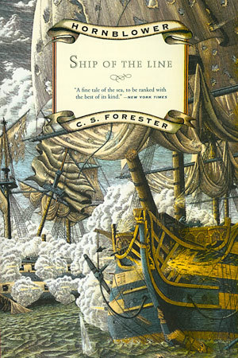

혼블로워의 자선 사업 (번역)
게시: 2017-05-31T22:43:53+09:00

이 작품은 원래 1938년 발표된 'Ship of the line' (전열함) 이라는 제목의 혼블로워 시리즈 소설에 삽입될 에피소드 중 하나로 씌여진 것입니다. 그러나 작가인 포레스터는 내용상 이 부분은 빼는 것이 좋다고 생각했는지 최종적으로는 정식 출판에서 빠지게 되었습니다. 아래 site에 원문이 올라와 있으니 원문 그대로를 읽으시고 싶으신 분은 참조하시기 바랍니다.
원래 제가 이 블로그를 시작한 이유가 Sharpe 시리즈의 국내 출판 때 저를 번역 작가로 선택해 달라는 일종의 광고 내지는 시위로 시작한 것이었습니다. 싸이월드 페이퍼에서 시작했던게... 그게 벌써 거의 10여년 전이네요. 이 블로그가 인연이 되어 밀리터리 리뷰라는 잡지에 나폴레옹 관련 전쟁사를 연재하게 되기도 했습니다. 그러나 Sharpe 시리즈의 국내 출판은... 아직 전혀 입질이 없습니다 ㅋ
어쨌거나 지난 편에 바일렌 전투에서 통째로 포로가 된 뒤퐁의 군단이 카브레라 섬에 수용되었다는 기록을 보고, 이 단편이 생각나서 소개드립니다.
http://www.e-reading.club/bookreader.php/79916/Forester_-_Hornblowers_charitable_offering.html
혼블로워의 자선 사업 (HORNBLOWER'S CHARITABLE OFFERING) - C. S. Forester 작. (배경 : 1810년 스페인 남단 서부 지중해 해상)
호레이쇼 혼블로워 (Horatio Hornblower) 함장이 지휘하는, 2열 포갑판을 갖춘 영국 해군 74문짜리 전열함 서덜랜드 (HMS SUTHERLAND) 호는 서부 지중해의 랑데부 지점을 향해 지브랄타 (Gibraltar, 지중해와 대서양을 이어주는 지브로올터 해협의 스페인 쪽 해안에 있는 영국 해군 기지 - 역주)로부터 북상 중이었다. 좌현으로는 스페인 해안이 펼쳐져 있었고, 우현으로는 수평선 너머에 간신히 보이는 위치에 발레리아스 제도 (Balearic Islands) 중 하나의 섬인 이비사 (Ibiza)가 거의 눈에 보일락말락 드러나 있었다. 이제 스페인은 영국의 우방국이 되었으므로, 스페인의 통상을 요격하고 스페인 군함들과 싸우는 것은 이제 서덜랜드 호의 임무가 아니었다. 이젠 오직 프랑스만이 적국이었고, 프랑스의 스페인 정복은 아직 발렌시아 (Valencia)만큼 남쪽까지는 미치지 못한 상태였다. 서덜랜드 호가 북쪽으로 파견되는 것은 카탈로니아 (Catalonia)에서 벌어지는 전쟁을 지원하기 위해서였다. 최소한 혼블로워는 그렇게 추측했다. 그러는 동안 그는 두드러지는 고민거리가 없었다. 선원도 정원을 꽉 채웠고, 전함도 튼튼하게 건조된데다, 랑데부 위치에 도착하기 전까지 특별히 할 일이 없었던 것이다. 지금은 한 임무에서 다른 임무로 넘어가는 전환기였고, 혼블로워는 긴장감 넘치는 역동감과 자유의 느낌으로 짜릿한 상태였다. 서덜랜드 호는 알맞은 동풍을 향해 맞바람을 받은 상태로 (close-hauled) 그 거대한 선체를 움직여가고 있었고, 혼블로워는 상쾌한 공기와 은혜로운 햇살을 즐기며 갑판을 걸었다.
그의 행복한 중립 상태를 깬 것은 선수 돛대 위의 전망대의 견시병이었다.
"여~ 갑판 ! (Deck, there !) 함장님, 똑바로 전방에 뭔가가 떠있습니다. 어쩌면 뭔가의 잔해물일 수도 있습니다. 아직 정확히는 모르겠습니다."
"똑바로 전방인가 ?"
"예, 함장님 (Aye aye, sir). 우리 배의 진행 방향에 정확히 놓여 있습니다. 뗏목 같습니다, 함장님. 사람이 하나 보이는 것 같은데요 ? 두 명... 같습니다, 함장님."
전시의 바다에 사람을 태운 뗏목이 존재한다면 그 이유야 뻔했다. 여기 제해권을 놓고 벌어지는 투쟁 중에 치루어진 처절한 전투의 생존자일 것이다. 서덜랜드 호는 별로 꺼릴 것 없이 이대로 항진하여 조사해볼 수 있었다. 화약을 실은 작은 보트를 전열함 옆에서 폭발시키는 여러가지 방법들을 제안했던 수많은 발명가들에 대한 생각이 떠오르자 혼블로워의 머릿속에는 묘한 불안감이 떠올랐다. 하지만 그런 것들은 물론 모두 말도 안되는 헛소리에 불과했으므로 혼블로워는 그런 불안감을 대수롭지 않다는 듯 떨쳐버렸다. 그렇게 부질없는 생각들을 연달아 하는 동안 몇 분이 흘러 그 이상한 물체가 갑판에서도 보이게 되었다.
"뗏목 맞습니다, 함장님." 선임 부관(Lieutenant, 당시 영국 해군 계급은 대위니 소령이니 하는 세부적인 계급이 없었고, 기본적으로는 함장 captain과 부관 lieutenant로만 나누어져 있었습니다. 그러다보니 고참 부관 중에는 40대인 사람도 있었고, 신참 중에는 10대 중반의 소년도 있었습니다. 이들 간의 상하 관계는 임관 연도에 따라 결정되었고, 그 중 최고 선임이 1st lieutenant 였습니다. - 역주)인 부시 (Bush)가 망원경을 눈에 댄 채 햇살이 비치는 물 위를 바라다보며 말했다. "사람 하나가 손을 흔들고 있군요. 한 명 더 있는 것 같습니다."
"저 뗏목의 풍상 (windward, 바람이 불어오는 쪽) 위치를 점하게 되면 배를 정지 (heave to, 닻을 내리거나 돛을 걷지 않고, 돛과 키의 방향을 조절하여 배가 제자리에 머물도록 하는 조작)시키게." 혼블로워가 명령했다.
부시는 그 이상한 물체 가까이에 서덜랜드를 근접시킨 뒤, 깔끔하게 정지시켰다.
"묘한 뗏목이네요." 서덜랜드 호가 바람에 떠밀려 그 물체로 서서히 접근하는 동안, 부시가 출렁이는 바다 너머를 쳐다보며 말했다.
그건 2개의 통나무를 조악하게 엮은 것에 불과한 물건이었다. 파도가 그 위로 몰아쳐 그 위에 올라탄 두 사람은 항상 반쯤 물에 잠긴 상태였다. 한명은 무릎을 꿇은 자세로 조악하게 만든 노를 쥐고 있었고, 다른 하나는 누워 있었는데 그의 몸을 휩쓰는 파도에 가끔씩 머리까지 물에 잠기곤 했다.
"저들에게 로프을 던져 줘." 혼블로워가 말했다.
하지만 무릎을 꿇고 있던 그 남자조차도 너무 쇠약하여, 솜씨있게 던져준 로프도 별 도움이 되지 못했다. 그는 그걸 쥐려고 더듬거리다 놓치고는 지쳐 고개를 푹 숙이고 말았다. 결국은 쿼터보트 (quarterboat, 전함의 후미 갑판인 quarterdeck 옆에 매달아둔 소형 보트)를 내려 보내야 했고, 그 두 남자는 주가로활대 (main-yard arm)에 매달린 갑판장 의자 (bos'un's chair, 밧줄 오르기에 미숙한 사람을 배에 태우기 위해 내려보내는, 판자로 만든 간이 의자)를 타고 올라와야 했다. 그들은 마치 산 살바도르의 인디언처럼 벌거벗은 갈색 피부를 드러낸 채 갑판 위에 뻗어 있었는데, 그 몸은 절박할 정도로 바싹 마른 상태였다. 몸의 뼈 하나하나가 마른 피부 위로 불쑥 튀어나와 뚜렷이 보였고, 마치 골격 위에 가죽을 바짝 당겨 씌운 것 같았다. 그들의 긴 산발머리와 수염에서는 물이 뚝뚝 떨어져 갑판을 적시고 있었다. 하나는 죽은 듯 아무 움직임이 없었고, 다른 하나는 그들을 내려다보는 선원들에게 연약한 손을 내밀고 있었는데, 쉰 목소리와 함께 손가락으로 그의 목구멍을 가리켰다.
"목이 마른게군, 불쌍한 녀석." 부시가 말했다. 혼블로워가 눈짓을 하자마자 곧 선원 하나가 물을 가지러 달려갔다.
이 조난자들은 허겁지겁 물을 마셨는데, 물이 이 조난자들에게 일으키는 빠르고도 현격한 변화는 혼블로워와 부시의 눈에 마치 죽은 자가 살아나는 기적이 벌어지는 듯 했다. 그들은 마술에 걸린 것처럼 생기가 돌아왔다. 갑판에 뻗어, 물을 마시게 하기 위해 다른 사람이 부축을 해줘야 했던 남자는 일어나 앉을 수 있을 정도가 되었다. 해골 같은 미소로 그의 여윈 얼굴이 구겨졌다.
"배도 고플 것 같군요." 부시가 말했다. "그런 것처럼 보이는데요."
누군가 또 달려가 먹을 것을 가져오는데 필요한 것은 혼블로워의 고개짓 한번 뿐이었다.
"너희들은 누구냐 ?" 혼블로워가 물었다.
"프랑수와 (Francois)입니다." 좀더 기운이 있어 보이던 남자가 대답했다. 그는 갈색 얼굴에 어울리지 않게 튀어보이는 푸른 눈을 가지고 있었다.
"프랑스놈들이군, 세상에 ! (Frenchies, by God!)" 부시가 중얼거렸다.
"어디서 오는 길이었지 ?" 혼블로워는 영어로 물었다가, 그 말을 이해 못하는 것을 보고는 더듬거리는 프랑스어로 반복해서 물었다. (혼블로워는 어릴 때 가정교사에게서 불어를 배워, 다소 서툴지만 불어를 할 줄 압니다. 스페인에 포로로 잡혀 긴 감옥 생활을 하는 중 스페인어를 배워 스페인어도 유창하게 잘 합니다. : 역주)
푸른 눈의 남자가 바람 불어오는 방향에 있는 발레리아스 제도 쪽으로 막대기 같은 팔을 뻗어보였다.
"카브레라 (Cabrera)요." 그는 말했다. "우린 포로였습니다."
혼블로워와 부시는 눈빛을 교환했고 부시는 휘파람을 휘익 불었다. 부시도 최소한 포로의 몸짓을 이해할 수 있었고, 카브레라라는 이름을 알아들었다. 카브레라는 원래 무인도였다가 스페인이 프랑스 전쟁 포로들을 가둬두는 포로 수용소로 쓰고 있는 섬이었다.
검은 눈동자의 조난자는 쉰 목소리로 빨리 지껄였다.
"우릴 거기로 돌려보내지는 않겠지요, 므슈 (monsieur, 영어의 미스터에 해당) ?" 그는 말했다. "대신 영국의 포로로 삼으세요, 그러면 안 될까요 ?"
그의 말은 쇠약함과 흥분 때문에 점점 알아들을 수 없게 되었다. 부시는 언제나처럼 유심히 지켜보고 있었으나 보이는 것으로는 이해가 잘 안되고 있었다.
"이들이 목이 마른 것은 이해가 갑니다." 그가 말했다. "하지만 카브레라에서 온 것만으로는 이렇게 말라 비틀어질 수가 없는데요. 바람이 없더라도 노질 만으로도 이틀이면 여기까지 올 수 있었을 겁니다."
"카브레라를 떠난 게 언제였지 ?" 혼블로워가 물었다.
"어제요."
혼블로워는 부시에게 통역을 해주었다.
"이들의 피부가 그을린 것은 몇 달 동안에 걸친 겁니다." 부시가 말했다. "이 친구들 몇 주 동안 바지도 안 입고 있었던 것이 확실해요. 카브레라에서는 웃기는 일이 벌어지고 있는 것이 틀림없네요."
혼블로워가 조난자들에게 물었다. "말해보게. 어쩌다가 - 이렇게 된 거지 ?"
대답으로 나온 것은 긴 이야기였다. 특히 조난자들이 먹고 마시느라 이야기를 중간중간 끊었기 때문에 더 길어졌는데, 그 동안 혼블로워는 더 놀라운 부분들을 부시에게 통역해주었다.
그 섬에는 불쌍한 녀석들이 약 2만명 정도가 있었다. 대부분은 바일렌 (Baylen) 전투에서 항복한 포로들이었으나, 수백 건의 다른 전투에서 잡힌 포로들도 많았다. 이들은 원래 육지의 수용소에 갇혀 있었으나, 끊임없는 탈출 시도로 스페인 당국을 몹시 귀찮게 했었다. 결국 스페인 당국은 이 2만명의 포로 전부를 가로세로 수 km 밖에 안되는 바위섬인 카브레라에 쏟아 놓아버렸다. 그것이 2년 전 일이었다. 이 섬 자체에는 스페인 간수들도 필요 없었다. 영국의 제해권 덕분에 어떤 프랑스 선박도 구출 작전을 시도할 수 없었고, 가끔씩 떠밀려 오는 나무조각을 빼고는 조각배를 만들 재료도 구할 수 없었다. 2년 동안 이 2만 명의 비참한 포로들은 여름의 태양과 겨울의 폭풍을 피하기 위해 바위 틈에 구멍을 파고 살아야 했다.
"섬 전체에 우물은 두 개 뿐입니다, 므슈." 푸른 눈의 프랑스인이 말했다. "그리고 가끔씩 우물들도 말라 버려요. 하지만 가끔 비가 내립니다."
혼블로워의 수학적인 머리는 2만명의 사람들에게 2개의 우물로 식수를 공급하는데 생기는 시간 문제를 계산했다. 우물에 물이 항상 넘친다고 하더라도 각자가 하루에 한번 목을 축일 수 있다면 운이 좋다고 할 수 있었다.
물론 이 섬에는 땔감이 아무 것도 없었다. 이 2만명은 2년 동안 불꽃이라고는 구경도 못 하고 살았고, 그들이 입고 있던 옷도 2년 간의 야외 노출에 남아나지 않았다. 스페인 당국은 식량을 띄엄띄엄 상륙시켜 줬는데, 이들은 그걸 익히지도 않고 먹어야 했다.
"식량은 절대 충분히 오지 않았습니다, 므슈." 프랑스인이 설명했다. 혼블로워는 스페인 사람들의 방식에 익숙했기 때문에 상황을 이해할 수 있었다. "게다가 가끔씩은 아예 아무 것도 오지 않았습니다. 바람 방향 때문이었습니다, 므슈. 바람이 동쪽에서 불어오면, 므슈, 우린 굶습니다."
부시는 해도와 서부 지중해의 항해 지침서를 들여다보고 있었다.
"저들 말이 맞습니다, 함장님." 부시가 말했다. "상륙할 만한 지점이 딱 한 곳이 있는데, 동쪽에 있네요. 동풍이 불어오는 중에는 상륙이 불가능합니다. 지침서에 따르면 2개의 우물이 있고 숲은 없다는군요."
"원래는 매주 두번씩 식량을 가져오게 되어 있습니다, 므슈." 프랑스인이 말했다. "하지만 가끔은 3주만에 한번 식량을 보내준 적도 있습니다."
"3주라고 !"
"예, 므슈."
"하지만... 그렇지만 ?"
"우리들 중 똑똑한 친구들은 이런 경우에 대비해서 바위 틈에 작은 비밀 식량 저장고를 마련해두었습니다, 므슈. 우린 물론 그걸 싸워서 지켜야 했습니다. 나머지 친구들에게는... 대개 다른 종류의 먹을 것이 많이 있습니다, 므슈. 이제 그 섬에는 2만 명이 있지는 않습니다."
혼블로워는 선실 창 밖 수평선의 흐릿한 얼룩 같은 섬을 내다보았다. 그 섬에는 계몽된 19세기에 실제로 인육을 먹는 일이 벌어지고 있었다.
"신이여 자비를 !" 부시가 엄숙하게 말했다.
"우리가 어제 탈출할 때는 1주일간 식량이 오지 않았습니다, 므슈. 하지만 동풍은 언제나 굶주림과 함께 유목 (driftwood)도 가져 옵니다. 우린 2개의 통나무를 발견했지요. 마르셀 (Marcel)과 제가요. 이 통나무 뗏목을 타고 탈출 기회를 노리려는 사람들이 많았지요, 므슈. 하지만 우리가 더 힘이 셌습니다. 섬에 남아 있는 대부분의 사람보다는 더 셌지요."
그 프랑스인은 자신의 앙상한 팔을 거의 자기 만족에 빠져 내려다 보며 말했다.
"예 정말 우리가 더 셌지요." 마르셀이 말을 받았다. "이 배가 저희를 발견하지 못했더라도 우린 살아서 스페인 육지에 도착했을 겁니다. 지금 쯤은 우리 황제 폐하께서 스페인을 전부 다 정복하셨겠지요 ?"
"아직은 아니야." 혼블로워는 간단히 대답했다. 그는 '반도 전쟁'이라는 이름으로 불려지고 있는 이 엄청난 규모의 혼란을 그 자리에서 정리해서 설명해줄 준비가 안되어 있었다.
"스페인군이 아직 발렌시아에서 버티고 있지." 그는 말했다. "너희들이 거기 도착했다고 하더라도 스페인 사람들은 너희를 다시 카브레라로 되돌려 보냈을 거야."
프랑스인들은 서로를 쳐다 보았다. 그들은 다시 말이 많아졌지만 혼블로워는 신경질적으로 그들을 제지했다.
"가서 잠이나 좀 자게." 그는 선실 밖으로 걸어나왔다.
프랑스인들의 이야기가 그의 마음 속에 불러 일으킨 추악한 장면들을 뒤로 하고 갑판 위에 올라서니 공기가 좀더 순수하게 느껴졌다. 혼블로워는 인간이 고통을 겪는 것을 혐오했다. 그는 카브레라에서 굶주리는 프랑스인들에 대한 생각으로 심란하여 갑판 위를 오락가락 걸었다. 그가 날씨의 징조를 제대로 볼 줄 안다면 - 그는 자신의 그런 재주에 자신감이 있었다 - 동쪽에서 불어오는 이 거센 레반트 바람 (Levanter, Levent는 팔레스티나, 시리아 등 동부 지중해 연안을 가리키는 지명 : 역주)은 최소한 1주일은 더 불어올 것 같았다. 스페인 수중에 있는 프랑스 전쟁 포로들에 대해 걱정하는 것은 그의 소관이 아니었다. 카브레라는 그가 가야 할 항로에서 벗어난 위치에 있었다. 그의 전열함에 실린 영국 정부 물자는 엄격하게 그의 전열함 용도로만 사용되도록 보존되어야 했다. 그가 만약 카브레라 섬의 참극을 구원하기 위해 아무리 사소한 일이라도 벌인다면, 그는 제독에게 그에 대해 변명을 하느라 호된 곤욕을 치를 것이 분명했다. 상식이 있는 사람이라면 그런 일은 시도조차 하지 않을 것이다. 상식이 있는 사람이라면 그냥 어깨를 으쓱 하고는 카브레라에서 프랑스인들이 죽은 동료의 시신을 먹는다는 짐승같은 일은 모두 잊어버리려고 최선을 다할 것이다. 하지만 서덜랜드 호가 정지 상태에 있도록 가능한 한 최대로 맞바람을 받도록 배를 돌려 놓으니, 섬이 저 멀리 보이고 있었다. 여기서 더 지체한다면 맞바람을 거슬러 한참 올라가야만 했다. 혼블로워는 갑판 위를 반복해서 걸으며 어떻게 하면 파도가 몰아치는 해변에 보급품을 상륙시킬 수 있을지를 궁리했다.
그의 기묘하게 수학적인 두뇌는 그 능력을 최고조로 발휘하고 있는 중이었다. 그의 머릿속에는 온갖 종류의 탄도학 공식들이 떠올랐다. 과학적인 포술학은 아직 유아기적 단계에 있었다. 울위치 (Woolwich)에 있는 병기창 당국이 거기서 대량으로 제작되는 병기들의 거동에 대한 데이터를 모으기 위해 테스트를 시작한지가 불과 몇 년 밖에 되지 않은 시점이었다. 그리고 그들의 관심은 전함들의 거포에만 쏠려 있었고, 지금 혼블로워가 사용을 고려 중인 6파운드 짜리 보트 장착 포에 대해서는 아무 관심이 없었다. 그 외에도, 그는 그 6파운드 포를 그가 아는 한 울위치는 물론 어느 누구도 생각해보지 않은 방법으로 사용할 생각이었다. 여태까지, 어느 누구도 그가 고려하는 것처럼 밧줄로 간격을 잇기 위해 대포를 사용할 생각은 해보지 않았다. 그의 계획이 성공하지 못한다면, 다른 방법을 짜내야겠지만 그는 시도해볼 만한 가치가 있다고 생각했다.
그는 일련의 생각에서 벗어나 그의 어리둥절한 부하들에게 일련의 명령을 내렸다. 대장장이에게는 끝에 고리가 달린 쇠막대기 하나를 만들고, 그것을 롱보트 (longboat, 보트 양쪽에 10명 정도의 노수가 앉는 대형 보트 : 역주)에 장착된 6파운드 포 구경에 맞도록 뱃밥(oakum)과 삼베실로 단단히 감싸라고 했다. 갑판장은 100 패덤 (fathom, 1 패덤은 6피트 = 약 180cm) 길이의 가장 좋은 삼 (hemp) 밧줄을 꺼내어 밧줄 걸개 막대 (belaying-pin)에 촘촘히 힘껏 감아 완전히 나긋나긋해지도록 만든 다음에 떡갈나무로 만든 소화용 버킷 안에 완벽한 대칭이 되도록 잘 감아넣으라는 명령을 받았다. 통장이와 그 조수들은 염장 쇠고기 통을 꺼내어 절반 정도의 내용물을 비운 뒤 다시 튼튼히 밀봉하도록 지시를 받았다. 어리둥절한 갑판장 조수 하나는 6명의 다른 선원들과 함께 이 20개의 절반 정도 빈 쇠고기 통을 엮어, 마치 실에 꿴 염주로 된 하나의 거대한 목걸이처럼 만들도록 지시를 받았다. 이 거대한 목걸이의 염주 하나하나는 약 2백관 (2-hundredweight, 1 hundred weight는 약 50kg : 역주)에 달하는 고기를 담은 통이었고, 이 통들은 약 60 야드 (약 90cm)의 굵은 밧줄 (cable)로 옆 통과 연결되어 있었다. 이런 작업들이 시작된지 한참이 지나자, 서덜랜드 호의 갑판은 누가 보기에도 꽤 난장판이 되어 버렸다. 그리고 그 저녁 내내 서덜랜드 호는 카브레라를 향해 맞바람을 받으며 (close-hauled) 항로를 꾸준히 유지했다.
새벽이 되자 서덜랜드 호는 카브레라에 도착했고, 희미한 여명이 비출 무렵에는 해변을 향해 조심스럽게 움직이고 있었다. 바람이 반대로 불어오는데도 불구하고 그 위치에서도, 해변에 부딪히는 파도의 천둥같은 소리가 들려왔다.
"저건 스페인놈(dago, 스페인 사람들을 얕잡아 부르는 말)들의 식량 보급선일 겁니다. 1기니 (guinea, 당시 영국의 21실링짜리 금화. 현재가치로는 약 27만원)를 걸어도 좋습니다." 부시는 눈에 망원경을 댄 채로 말했다.
그건 작은 브릭(brig)선이었는데, 수평선에 가려 돛대만 보이고 있었고, 바람을 탄 정지 (hove to) 상태에 있었다.
"그렇군." 혼블로워는 짧게 말했는데, 부시의 그 선언에는 그 이상의 대꾸를 해줄 필요가 없었기 때문이었다. 그는 망원경으로 스페인 사람들이 2만명의 포로들을 수용하기에 적절하다고 판단한 삐죽삐죽한 바위들로 이루어진 해변가를 살펴보느라 정신이 팔려 있었다. 그 섬은 푸른 지중해에 마치 이빨처럼 솟아오른 능선 하나 뿐인 그저 잿빛 바위 조각에 불과했다. 그 가파른 능선의 경사에 초록색 식물이라고는 전혀 보이지 않았다. 그 해변에는 엄청난 파도가 하얀 물보라를 일으키며 부서지고 있었다. 혼블로워의 눈에 절벽에 파도가 부딪힐 때 20~30 피트에 달하는 높이까지 솟구치는 것이 보였는데, 그 가운데 부분은 예외였다. 거기에는 긴 물거품 속에 상륙을 위한 해변이 보였고, 그와 함께 상륙을 위협하는 온갖 위험성도 보였다. 정말 고약한 장소였다.
"동풍이 부는 동안에는 보급품을 상륙시키지 못하는 것에 대해 스페인놈들을 탓할 수는 없겠는데요." 부시가 말했다. 이번에는 혼블로워로부터 아무런 대꾸도 받지 못했다.
"롱보트를 내려라." 혼블로워가 날카롭게 외쳤다. 어려운 임무에 임할 때면 그는 부하들에게 소소한 예의를 일부러 갖추지 않았는데, 이는 일이 실패로 돌아갈 경우 부하들로부터 동정을 구하려는 보험 따위는 들지 않겠다는 의지의 표현이었다.
갑판장인 해리슨이 쩌렁쩌렁 울리는 목소리로 명령을 복창하는 동안, 갑판장 조수들이 호각를 삑삑 불며 명령을 내렸다. 도르래에 선원들이 배치되고 롱보트는 받침목에서 들어올려져 뱃전 너머로 내려졌다. 파도가 출렁이며 서덜랜드 호가 요동치는 동안 서덜랜드 호의 함체에 롱보트가 부딪히지 않도록 롱보트의 승무원들이 노로 밀어냈다.
"저 보트에 타겠네, 미스터 부시." 혼블로워는 짧게 말했다.
그는 도르래 줄 (fall) 중 하나를 붙잡고 내려갔다. 그의 서툰 몸은 보기 흉하게 대롱대롱 매달렸고 롱보트의 승무원들은 혹시라도 혼블로워가 떨어질 때 그를 받기 위해 서둘러 내려가느라 허둥댔다. 그의 전체 선원들 중에서 가장 서투른 장루원 (topman)조차도 자기보다는 밧줄을 더 잘 탄다는 사실에 항상 마음이 불편했다. 그는 간산히 그럭저럭 망신스럽지 않게 내려왔고, 마지막에 전열함과 보트의 상대적인 움직임을 잘못 예측한 결과로 3피트 (약 1m) 정도를 뚝 떨어지는 바람에 약간 체면이 상했을 뿐이었다. 누군가가 그의 모자를 주워 주었고, 그는 머리에 그걸 다시 썼다.
"노를 저어라 (Give way)." 그가 날카롭게 외쳤고, 롱보트는 출렁이는 파도를 헤치고 저 먼 해변을 향해 기어나가기 시작했다.
이제 망원경을 통해 혼블로워는 카브레라 해변으로 쏟아져 나오는 사람들의 작은 모습을 볼 수 있었다. 그들은 어제 그가 끌어올린 두 명처럼 모두 나체였다. 혼블로워는 삐죽삐죽한 카브레라의 바위들 위를 맨살로 기어오르는 것이 어떤 고통일지 궁금했다. 또 바위 틈 구멍 속에서 겨울의 폭풍을 견디며 나체로 살아가는 것이 어느 정도의 고생일지도 궁금했다. 뾰족한 바위섬이 지난 2년간 목격했을 그런 공포와 비참함에 대한 생각으로 그는 속이 메슥거렸다. 그는 그런 고통을 조금이라도 덜어줄 이 작은 시도를 행하고 있다는 것이 기뻤다. 그는 망원경을 치우고는 선수에 장착된 6파운드 포를 향해 노수들 사이로 걸어 갔다.
그의 명령에 따라, 선원 중 하나가 종이 탄약포를 찢었고, 대포의 포구에 화약을 부어 넣고 화약마개 (wad, 대포 약실에서 화약이 흘러나오거나 또는 외부의 습기가 화약에 닿지 않도록 화약 위를 틀어막는 삼베찌꺼기 등으로 만든 둥글고 납작한 마개)를 장전봉으로 밀어 넣었다. 다른 선원은 대장장이가 준비한 기묘한 포탄에 밧줄을 매듭지었다. 혼블로워는 그 쇠막대 포탄을 포구에 집어 넣고 장전봉으로 밀어넣었다. 그는 위아래 조절 나사를 휙휙 돌렸다. 대포의 후미를 받치는 쐐기가 미끄러지며 포구가 가장 높은 각도로 들어올려졌다. 그는 바람의 세기를 재며 이 거친 바다에서 보트의 움직임을 예측하기 위해 주위를 둘러 보았다. 그리고는 그는 격발 끈 (lanyard, 대포 점화구에 장착된 부싯돌 격발 장치에 연결된 끈 : 역주)을 잡아 당겼고, 대포가 불을 뿜었다.
그의 팔꿈치 곁의 통 속에 잘 또아리를 틀고 있던 밧줄이 갑자기 살아나 맹렬하게 풀려나갔다. 눈 앞을 가리던 포연이 제때에 걷혀, 공중에 밧줄이 포물선을 그리는 것이 힐끗 보였는데, 그 줄을 끌고 가던 포탄은 파도 속에 빠지고 말았다. 롱보트의 선원들로부터 낮은 신음소리가 흘러나왔다. 이들은 긴 항해의 지루함을 깨뜨리는 그 어떤 일이라도 환영하는 선원들의 특성대로, 이 모든 일의 희한함에 대해 통상 그렇듯이 어린애같은 호기심을 가지고 있었다.
"밧줄을 다시 끌어당겨라." 혼블로워는 가로좌대 (thwart)에 앉으며 말했다. "완전히 부드러운 코일 형태로 잘 말아."
과학적인 포술학 덕택에 그는 위로가 되는 사실 하나를 알고 있었다. 첫번째 사격이 실패했다고 20번째 사격도 실패할 것이라는 증명이 되지는 않는다는 점이었다. 이번에는 밧줄과 포탄이 젖어서 더 무거울 것이었다. 대포는 뜨거워져 전과는 다르게 반응할 것이었다. 이 파도 속에서 보트가 수평선에 대해 똑같은 각도를 이룰 가능성은 거의 없었다. 어쨌거나 시험 사격을 통해 바람에 대한 적정한 보정치를 주기 위해서는 보트가 좀더 해변 가까이 가야 한다는 것을 알 수 있었다. 롱보트가 파도 가장 자리로 몇 야드 더 전진하는 동안, 혼블로워는 젖은 포탄이 화약을 적시지 않도록 새 장약 위에 화약 마개를 이중으로 얹도록 했다.
대포가 다시 불을 뿜었을 때, 한순간 이번 사격은 성공적일 것처럼 보이기도 했으나, 결국 해변가에서 기다리는 군중들로부터 10 야드 (약 9m) 떨어진 파도 속에 떨어지고 말았다. 이 상황에서는 실질적으로 10 야드는 100 야드와 아무런 차이가 없었다. 3번째와 4번째, 그리고 5번째 사격은 오히려 더 큰 간격을 내고 떨어졌다. 혼블로워는 초기 포구 속도가 불충분하거나, 포탄이 날아갈 때 밧줄이 저항하는 힘이 그가 생각했던 것보다 더 강한 것이 아닌가 생각하기 시작했다. 대포에 좀 무리를 주더라도 장약을 좀더 많이 넣을 수도 있었다. 그렇게 하는 것에는 추가적인 위험도 따랐는데, 자칫 하다가는 줄이 끊어져 포탄이 그냥 멀리 날아가 해변가의 군중들 중 누군가를 꿰뚫어 버릴 수도 있었다. 하지만 6번째와 7번째 사격도 실패로 돌아가자, 혼블로워는 그 위험을 감수하기로 했다. 그는 정상적인 장약의 1.5배를 넣고는 장전봉으로 꾹꾹 눌렀다. 그리고는 선원들에게 가능한 한 보트의 선미 쪽으로 바짝 몰려 앉으라고 명했다. 만약 대포가 폭발할 경우에는 그 피해를 최소한으로 줄이고 싶었기 때문이었다. 그리고 다른 선원에게 격발 끈을 당기는 위험을 무릅쓰게 하는 것보다는 자기 자신이 당기는 것이 논리적이라고 보였다.
그는 밧줄을 마지막으로 한번 내려다보고는 격발 끈을 당겼다. 대포는 롱보트 전체를 후미 쪽으로 껑충 뛰게 만드는 충격과 함께 불을 뿜었고, 대포 자체도 굉음과 함께 포가에서 뛰어 올랐다. 하지만 튼튼한 쇳덩이로 된 포신은 잘 버텨 주었고, 포탄은 밧줄로 포물선을 그리며 바닷가 가장자리를 너머 기다리는 군중들 속에 떨어졌다.
연결 수단이 만들어졌으나, 이건 매우 취약한 연결일 뿐이었다. 해변의 광분한 사람들이 밧줄을 잡자마자 미친 듯이 당기기 시작했기 때문이었다. 혼블로워는 이런 사태가 벌어질 것을 예상하지 못한 자신을 탓했다. 그는 확성기 (speaking trumphet)를 주워들고 머리 속으로 "당기지 마 ! (Avast heaving)" 또는 "그만 ! (Belay)"에 해당하는 프랑스어를 생각해내느라 진땀을 뺐다.
"Doucement! Doucement! (두스망 - 진정해, 또는 부드럽게 : 역주)" 그는 외쳤다.
그는 미친 듯 팔을 휘두르며 보트의 선수에서 춤을 추듯 날뛰었다. 바람이 그의 목소리를 해변까지 실어 보냈는지 아니면 그의 손짓발짓이 이해된 모양이었다. 누군가가 해변의 군중을 진정시키고 있었다. 군중 속에 소동이 벌어지더니 밧줄이 풀려나가는 것이 멈췄다. 혼블로워는 롱보트를 조심스럽게 선회시키고 밧줄을 천천히 뒤로 풀면서 서덜랜드 호로 천천히 노를 저어갔다. 서덜랜드 근처에서 그는 그의 단정 (gig, 소형 보트)을 수신호로 불러 옮겨타고 서덜랜드 호에 올라 나머지 작업을 감독했다.
반쯤 비운 쇠고기 통의 긴 연결체가 바다 속으로 던져졌다. 론치 (launch, 당시 전함에 싣던 보트 중 가장 큰 보트)가 그를 뒤에 달고 천천히 롱보트 쪽으로 끌고 갔다. 쇠고기 통은 절반쯤 비어 있었으므로 바다 위에 높이 뜰 수 있었다. 그렇게 하면 파도가 아무리 심해도 가라앉지 않고 타넘을 수 있었다. 그리고 프랑스인들이 재빨리 밧줄을 당긴다면, 대부분의 쇠고기 통이 내용물을 담은 채로 해안에 도착할 수 있을 것이었다. 최악의 경우 통이 부서지더라도, 그 내용물은 조만간 해변가에 떠밀려 갈 것이었다. 통 속에 이미 6개월 간 들어있던 염장 쇠고기는 바닷물에 좀 잠긴다고 해서 더 크게 상할 것도 없었다.
혼블로워는 마지막 작업을 감독하기 위해 그의 단정으로 재빨리 옮겨 탔다. 더 굵은 밧줄이 해안가에 던져진 얇은 밧줄에 동여매어졌고, 혼블로워는 다시 확성기를 들고 일어섰다.
"Tirez! Tirez! (티레, '당겨' 라는 프랑스어)" 그는 외치고는 군중을 향해 확성기를 흔들었다.
그들은 그의 의도를 이해하고 당기기 시작했다. 가벼운 밧줄을 따라 더 굵은 밧줄이 따라 기어갔고, 그 뒤를 이어 쇠고기 통의 긴 줄이 따라갔다. 혼블로워는 눈부신 태양 아래 하얀 거품 속에 검게 보이는 투박한 물체들이 해안을 향해 천천히 기어가는 모습을 긴장 속에 지켜 보았다. 하지만 보지 않고도 그것들이 안전하게 해안에 도달했다는 것이라는 것을 예측할 수 있었다. 각각의 통이 해안에 도착하자마자 굶주린 사람들이 달려들려 돌로 통을 부수고 그 내용물을 서로 갖겠다고 싸우느라 대소동이 벌어졌기 때문이었다.
혼블로워는 그 결말을 보지 않고 돌아섰다. 그는 이 모든 일의 짐승스러움과 끔찍함을 떠올릴 장면들을 더 이상 보고 싶지 않았다. 그는 배로 돌아와 보트들을 끌어올렸다. 그는 아딧줄 (brace)을 당겨 활대를 돌리고 서덜랜드 호가 지연된 원래의 랑데부 위치로 나아가는 동안 다시는 섬 쪽을 쳐다보지 않으려 했다. 스페인 보급선은 돛을 활짝 펴고 서덜랜드 호로 다가왔다. 그 보급선이 서덜랜드 호의 선미를 바짝 붙어 통과할 때, 화가 난 장교 하나가 확성기를 통해 외쳤다.
"무슨 뜻입니까, 함장 ? (What you mean, sir?)" 그는 외쳤다. "간섭 무슨 뜻입니까 ? (What you mean interfering?) 카브레라는 우리 영토입니다. (Cabrera our country) 거기 가면 안됩니다 ! (you not must go there!)"
"엿이나 먹어라 ! (God damn you!)" 그의 말이 들려오자 혼블로워 옆의 부시가 나직히 말했다. "대포나 한방 먹여 줄까요, 함장님 ?"
그들이 그 참극을 목격한 뒤라서, 서덜랜드 호의 선원들은 그런 포격을 매우 흡족하게 생각하겠지만, 혼블로워는 영국과 그 동맹국 간에 국제 분쟁을 일으킬 일은 이미 충분히 했다고 생각했다. 그는 귀에 손을 대고 무슨 말인지 들리지 않는다는 몸동작을 취했다. 스페인 장교가 하도 으르렁거리고 길길이 뛰며 그의 말을 계속 반복하는 바람에, 혼블로워는 그 장교가 혈압이 올라 어디 핏줄이라도 터졌으면 좋겠다고 생각했다. 그가 한 짓은 어린 학생들이나 할 만한 장난질이었으나 서덜랜드 호의 장교들과 선원들에게서는 웃음이 터져 나왔다. 혼블로워가 바라는 것이 그것이었다. 이런 음울한 전시에 동맹국 간에 긴장이 팽팽한 순간에는 웃음이 큰 역할을 했다.
그리고는 그는 일상으로 되돌아왔다. 하지만 곧 우울한 현실에 대한 새로운 자각이 밀려왔다. 카브레라에 대한 구조 활동에는 수백 페덤의 밧줄과 굵은 케이블, 쇠고기 20통과 하루라는 시간이 소비되었다. 혼블로워를 억누르는 것은 이 모든 것에 대해 설명을 해야 할 거라는 예측이었다. 이로 인해 적어도 10여 통의 편지와 보고서를 써야 할 것이고 그건 단지 시작에 불과할 것이었다. 그의 편지와 보고서가 올라가면, 틀림없이 해군성의 장관들은 더 자세한 해명을 요구할 것이었고, 그 해명에 대해서 또 더 해명을 요구할 것이 뻔했다. 혼블로워의 눈에는 그런 편지들이 불러올 재앙의 끝이 선하게 보이는 듯 했다.
그 순간 그는 저 아래 주갑판 (maindeck, 주갑판은 함장이 서있는 선미갑판 quarterdeck에서 한층 아래에 놓여 있습니다 : 역주) 위에 두 명의 프랑스 포로가 있는 것을 보았다. 그들은 이제 옷도 제대로 입고 면도도 한 상태라 사람이 완전히 달리 보였다. 하지만 그는 그들의 모습을 보고도 전혀 기쁘지가 않았다. 그에게 있어 이 포로들은 이들의 존재에 대해 또 한 무더기의 편지와 보고서를 써야 한다는 것을 뜻했기 때문이었고, 그 생각이 들자 그는 낮게 신음 소리를 냈다. 한 순간 그는 차라리 서덜랜드 호가 그들을 발견하지 못해서 그들이 그냥 황량한 지중해에서 죽어버렸다면 좋았겠다고 생각했다. 하지만 그는 곧 그런 소원이 사실이 아니라는 것을 깨닫고 그의 매정함을 책망하며 갑판을 거닐었다. 하지만 그럼에도 불구하고, 이 자선 행위 덕분에 그는 입장이 몹시 곤란해질 예정이었다.
------------------------
여기까지입니다. 정말 짧지요 ? 이 단편에 대한 평은 별로 좋지 않습니다. 인터넷에 올라온 독자 평을 보면 '저렇게 쇠고기 통 몇개 던져주는게 무슨 의미가 있느냐' 등의 허무하다 라는 평가가 대부분입니다. 그래도 저는 꽤 재미있게 읽었습니다. 특히 저같은 직장인은 전함의 보급품 등에 대한 서류 작성 때문에 눈 앞이 깜깜해지는 혼블로워의 심정에 무척 공감이 갑니다.